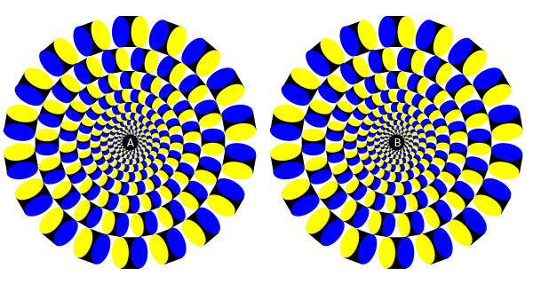
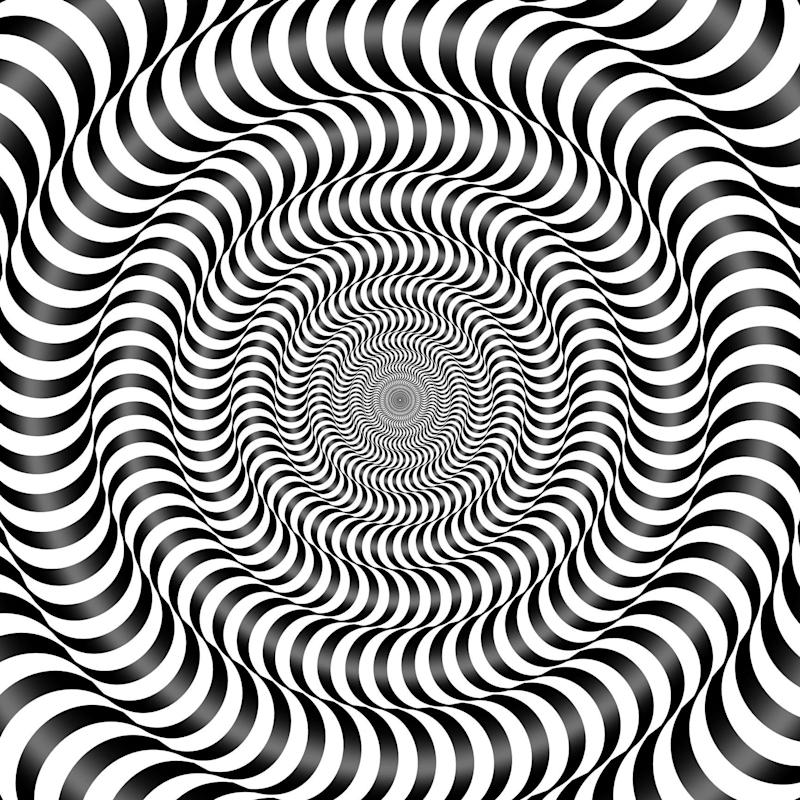

-----Forwarded Message-----
From: Grace <pinkhearts77@yahoo.com>
Sent: Dec 26 2006 9:35
AM
To: Janice <hellokittylover30@yahoo.com>
Subject:
Send to 10 Friends or Else!
For my 5th birthday, my sisters made me an email account as a birthday present so that I could take part in their chain mail shenanigans. My first email address? hellokittylover30@gmail.com. On a weekly basis, I was forwarded optical illusions, messages about the weather, or just cute animal images. While I didn't understand the hundreds of email addresses that were cc'd to share these emails and the expansive networks I was taking part in as a child, I enjoyed bragging to my kindergarten friends how I had my own email address.
On 2006-12-26 09:35:45 Janice Wrote:
I recall poorly formatted emails with images of various sizes. I was so confused by how the images appeared to be moving. When I'd ask my sister, she'd respond that it was an optical illusion in a voice akin to a magician reminding the audience that a "magician never reveals their secrets."
The first illusions my siblings would forward me were these spinning images.
Then over time, my sisters would send me "scarier" illusions, such as this inverted opitcal illusion that would require the viewer to stare at the dots in the center of the image, then look to a blank wall to see an image.
I'm grateful that I was introduced to the Internet very early on in my childhood.
Best,
Janice